Every pane and control, one sentence each. For the illustrated walk-through and the maker sheet, see the guide.
The idea
Four ideas the whole tool rests on.
The ideas
- A dial is a stack
- Date disc, plate with its print, hands, cap: the print is rings drawn on the plate.
- The ring list is the print, top first
- The top ring wins where rings meet; a ring can give way to the rings above it.
- Choose, then edit
- Choose a row in the ring list, or tap a mark on the preview: the panes below edit that ring.
- Everything is true size in mm
- Your dial is kept in this browser only: save a settings file to keep it for good, or share it as a link.
The screen
The window's eight parts, by number.
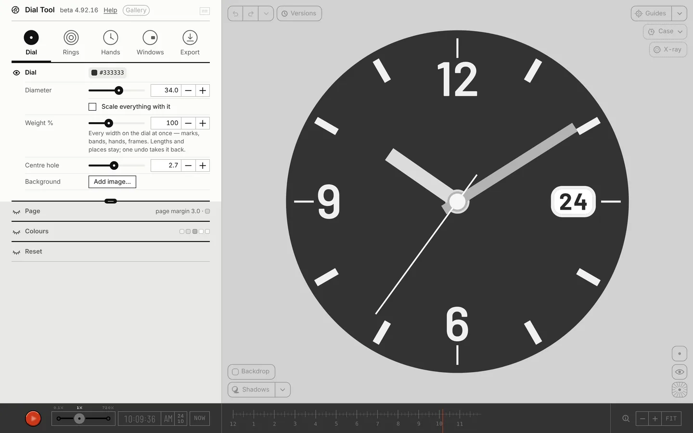
①②③④ ⑤⑥⑦⑧The window
- ①Title line
- The mark opens About; the version; Help, this page, in a new tab; the Gallery; the unit box: mm · pt · in · lig · thou.
- ②Tabs
- Dial · Rings · Hands · Windows · Export. Each opens its panes; pinned panes stay in view while the rest scrolls.
- ③Preview
- The dial at true proportions. Scroll zooms, right-drag moves, two fingers pinch and move.
- ④Top left
- Undo · redo, the list of steps, and Versions: your saved dials.
- ⑤Top right
- Guides, Case, X-ray: preview helpers, never in a file.
- ⑥Bottom left
- Backdrop, the colour behind the dial; Shadows.
- ⑦Bottom right
- The Tiny preview, the dial alone and show mode.
- ⑧Bottom bar
- Play, the speed, the time and am · pm, the date, Now, the timeline; Zoom out · Zoom in · Fit.
On a phone the panel is a drawer: drag its grip to make it taller or shorter.
A first dial
From a blank face to a file, in six steps.
Six steps
- ①Dial
- Reset › Blank face.
- ②Dial
- Set the Diameter.
- ③Rings
- Add a ring: ticks for the minute track, markers for the hours, numerals if you want figures.
- ④Hands
- Pick a shape for each hand.
- ⑤Windows
- Choose the card at 3 and tick Show for a date.
- ⑥Export
- PDF or SVG at true size; for print, tick Mono print mask under Print.
Dial
The plate. How big it is, its colour, and the page it sits on.
Dial
This pane stays put. The panes under it scroll.
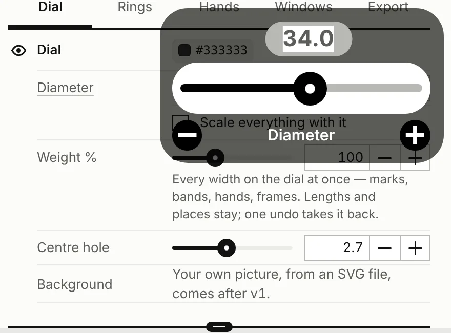
- Plate
- The plate's colour. It is the pill on the Dial heading line.
- starts Navy · #25305A
- Diameter
- The plate, edge to edge. You can type 5 to 300; past that it stops and tells you.
- 15–50 mmstarts 34
- Scale everything with it
- On, the whole dial grows and shrinks with the diameter. Slide back and you land where you began.
- starts off
- Weight %
- Every width at once: marks, bands, hands, frames. Lengths and places stay put.
- 50–200 %starts 100
- Centre hole
- The hole the hands pass through. Zero for none. You see it only with the hands hidden. In a mask its edge is a cut line.
- 0–6 mmstarts 2.7
- Background
- Your own picture behind the print, from an SVG file. It comes after v1.
A link doesn't carry Scale everything with it or Weight %. A settings file does.
Page
- Page margin
- Room round the dial on the exported page, and for the registration marks. The page is the diameter plus two margins.
- 0–10 mmstarts 3
- Backdrop
- The colour behind the dial, in the preview only. Never in a file. The Backdrop switch, bottom left, is the same colour.
Colours
Every colour on the dial, in one list. Folded, the heading shows them as small swatches.
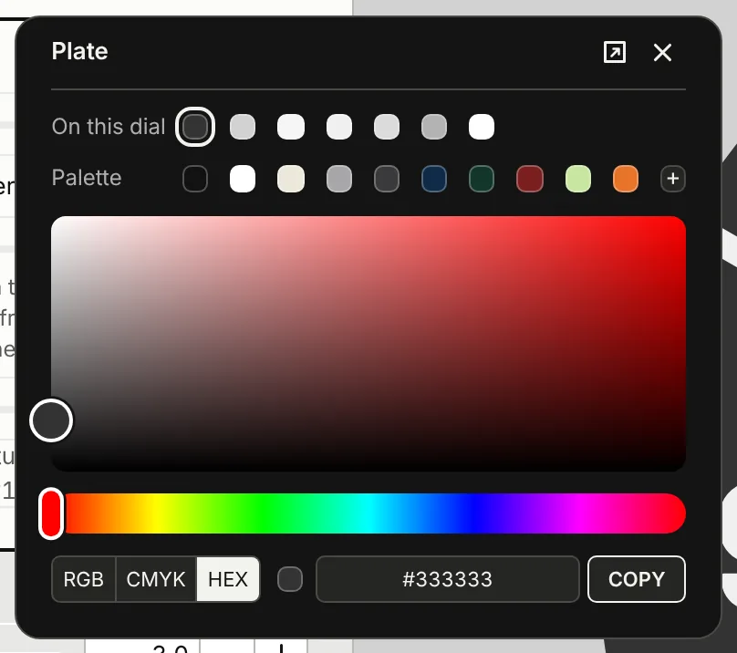
- The list
- Each ring, top first, by name. A band with sectors gets a swatch for each. Then the three hands, the cap, and the frame of each open window.
Reset
- Reset to the First dial
- The button on the heading line. Size, rings, hands, windows and colours go back to the First dial.
- Blank face
- A white plate, the hands, one hidden ring. Turn its eye on to start.
Both replace the whole dial. Undo brings yours back. A settings file keeps it for good.
Rings
The print is a stack of rings. The top of the list sits in front. Choose a ring and the panes below edit it.
Rings, top first
The ring list. It stays put while the panes under it scroll. Folded, it names the chosen ring, its kind, colour and radius.
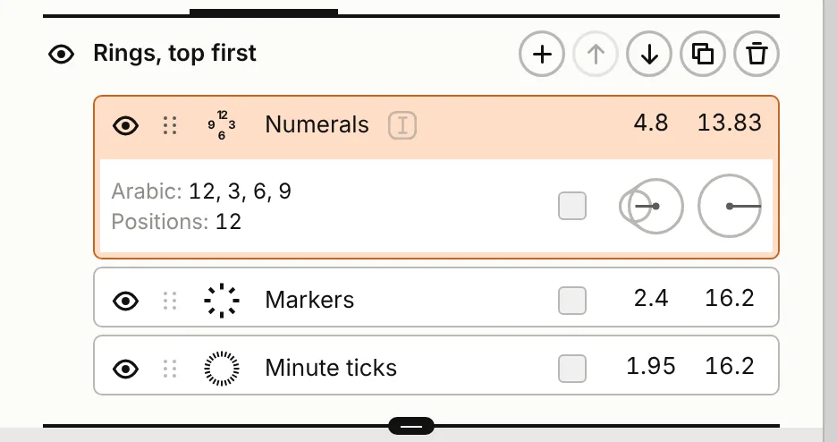
- A row
- Eye, grip, kind, name. Then two numbers: the size (a mark's length, a dot's Ø, a numeral's size, a band's width) and the radius.Show or hideGripRename
- Choose
- Press a row anywhere but its eye. Or Tab to it and press Enter. The chosen row takes its ring's guide colour.
- Eye
- Hides or shows the ring. It never changes which ring is chosen.
- Grip
- Drag to reorder. A line shows where the ring will land.
- Kind
- On the chosen row the kind's picture is a menu. Change the kind and the ring keeps its settings.
- Rename
- Press the chosen ring's name, or the box beside it. Enter keeps the new name. Escape, or an empty name, keeps the old.
- The drawer
- Two lines under the chosen row: what it draws, then where. Its swatch opens the colour. Its two round buttons set size and radius: press for the controller, or drag right or up. Shift is ten times finer.
- The pill
- Under the list. Five rows show, then the list scrolls. Drag the pill for more or fewer; tap it to jump between five and all.
Tools
On the heading line, for the chosen ring. A tool that can't act is faint.
- Add a ring
- Pick one of five kinds. It goes in above the chosen ring, named after its kind, in a guide colour no other ring has. A new numerals or text ring borrows the top numerals ring's font.
ticks 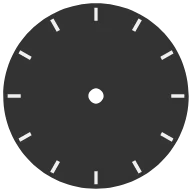
markers 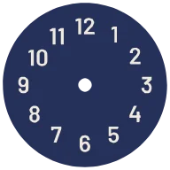
numerals 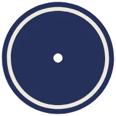
band 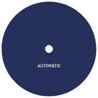
text - Move
- Up or down one place.
- Duplicate
- A copy, above the chosen ring.
- Delete
- A dial keeps one ring at least. Hide the last one instead.
On the preview
The chosen ring shows its guide and handles here, even with Guides off.
- Disc
- Drag in or out for the radius.
- Square
- Drag in or out for the length, Ø, size or band width.
- Triangles
- Drag round. The first sets Start, the second Span. The second shows only under 360°.
- A press
- The first press chooses a ring. The second picks the numeral or mark under it and opens Edit one. A press on nothing lets go.
The panes
Each kind shows only the panes it uses. Press a pane's heading to open or fold it. They start folded; folded, each sums itself up in a line.
| Pane, in order | Ticks | Markers | Numerals | Band | Text |
|---|---|---|---|---|---|
| Text | |||||
| Type | |||||
| Resize Ring | |||||
| Sector colours | |||||
| Shapes | |||||
| Positions | |||||
| Give way to rings above | |||||
| 12 o’clock · first position | |||||
| Numerals | |||||
| Band | |||||
| Edit one numeral · Edit one mark |
Text
What a text ring says. It is written at every position.
Type
The ring's font. Folded, it reads family, style, size.
- The font box
- “1234567890 Abcdefg…” in the ring's font. Press it to choose another.
- Name line
- The family's name, which also opens the font sheet. Then the text's colour, and the language.
- Language
- As the font sets it, or Turkish, Dutch, German, Polish, Romanian, Catalan, Arabic, Persian, Chinese simplified, Japanese.
- EN when none is set
- Styles
- Tabs under the name, when the family has two or more. A variable font with a weight axis and no named styles gets Regular and Bold.
- Size
- A new ring takes the top numerals ring's size.
- 0.3–8 mmstarts 4.8 Numerals
- Tracking
- In steps of 5.
- −200–800starts 0
- Axes
- A variable font's axes, one row each. Press a name to set it back.
- OpenType features
- Switches, in groups: named features, stylistic sets, character variants.
- starts shut
A font not loaded yet shows a stand-in and says so. Press its name to choose another, or to add it.
Resize Ring
A menu on the heading line says what the radius measures to. Marks and bands start at Outer, a new numerals or text ring at Middle.
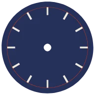
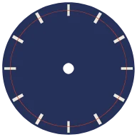
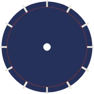
- Length
- A bar's or wedge's length. A new ring: 2.8 for markers, 1.0 for ticks.
- 0.05–10 mmstarts 2.4 Markers · 1.95 Minute ticks
- Ø
- A dot's diameter.
- 0.02–5 mm
- Band width
- A band's width.
- 0.02–25 mmnew band 1.0
- Radius
- To the point the menu names.
- 0–25 mm
- Shapes width
- The same value as Width in Shapes.
- 0.02–5 mmstarts 0.7 Markers · 0.2 Minute ticks
A numeral's size is in Type, not here.
Sector colours
For a band with more than one position.
- Sectors
- A swatch for each sector.
- Alternate
- With an even count: two swatches, odd sectors and even.
- All as the ring
- Every sector back to the ring's colour.
Shapes
- Shape
- barwedgedot
- starts bar
- Width
- Bar and wedge. A new ring: 0.7 for markers, 0.12 for ticks.
- 0.02–5 mmstarts 0.7 Markers · 0.2 Minute ticks
- Inner width ×
- The inner end against the outer. 0 is a triangle, 1 a bar. Wedge only.
- 0–2starts 0.35
- Hollow wall
- Draws the mark as an outline this thick. Dots too.
- 0–1.5 mmstarts 0 · solid
- Round outer · Round inner
- Rounds each end. Bar and wedge.
- 0–2 mmstarts 0
- Round both ends · Square
- Both ends to half the width, or both to 0.
Positions
Where a ring draws: how many places, which ones, and the arc they share.
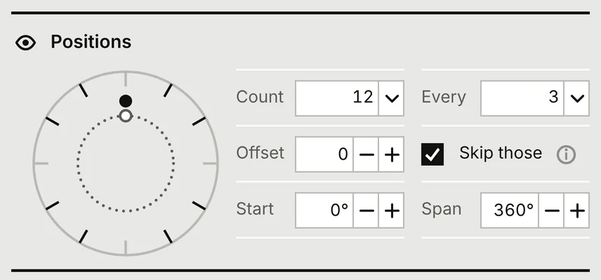
- Count
- How many positions round the span. Pick one, or Custom… to type any. A new ring: 12 for markers and numerals, 60 for ticks, 1 for bands and text.
- 1–360starts 12 Numerals, Markers · 4 Minute ticks
- Every
- Use one in every few. 1 to 30 from the menu, Custom… up to 60.
- 1–60starts 3 Numerals, Markers · 1 Minute ticks
- Offset
- Which one of the few. With Every 3, Offset 1 takes the 2nd, 5th, 8th.
- 0–59starts 0
- Skip those
- Turns it over: the ones Every and Offset pick are left out, the rest drawn.
- on for Markers
- Start
- Where the first position stands. A text ring snaps to another ring's position within 2°.
- −180°–180°starts 0° · 12 o’clock; 180° Text
- Span
- The arc the positions share.
- 1°–360°starts 360°
Give way to rings above
Whether this ring steps aside where rings above it fall.
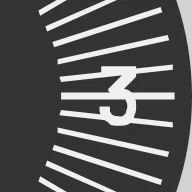
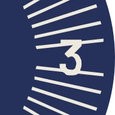
- Skip where
- Leaves out this ring's marks under the rings above: nothing · markers above · markers & numerals above · all marks above. Text counts as numerals.
- Knock out
- Cuts this ring back round the rings above: nothing · markers above · markers & numerals above · everything above.
- Clearance
- The gap a knock-out leaves. On Knock out, when it isn't nothing.
- 0–2 mmstarts 0.25
Markers, numerals and text leave an open window's place empty. Every ring is cut back from a window's clear zone.
12 o’clock · first position
- Style
- The first marker.samedoubletrianglenone
- starts same
- Scale ×
- Its size against the rest. Not for none.
- 0.5–2.5starts 1
- Gap
- Between the two of a double.
- 0–3 mmstarts 0.5
Numerals
- Labels
- On the heading line. Also Custom and Numbers.
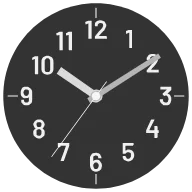
Arabic 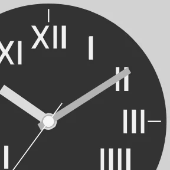
Roman · IIII 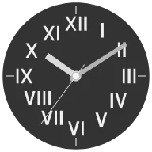
Roman · IV 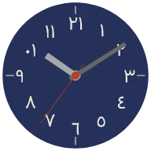
Eastern Arabic 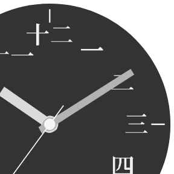
Chinese 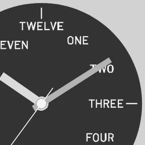
Words - starts Arabic
- Custom
- Your own labels, commas between, one for each position. The rest stay empty.
- First number · Step
- For Numbers: the first label, then what each adds. Step runs −100 to 100.
- −1000–1000starts 0 · step 5
- Digits
- Pads each number with zeros to this many digits.
- 0–4starts 0
- Start again after
- After this many positions the count starts over. Zero counts on. With 12, from 5 by 5: 5 to 60, then 5 again.
- 0–60
- Placement
- How each numeral stands.

upright 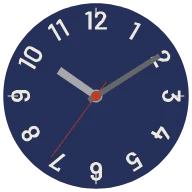
radial 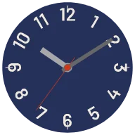
auto-flip 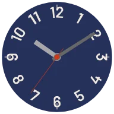
on path - starts upright
Band
- Fill % of step
- How much of each step the band covers.
- 1–100 %starts 100 %
Edit one numeral · Edit one mark
One numeral or one mark, on its own. While the pane is open it is outlined on the dial, and the guides hide.
- Numeral · Mark
- Which one. Only drawn ones are listed; an edited one has a •. Or press the ring on the dial, then the one you want.
- Font
- Its own font, from the font sheet. As the ring takes the ring's back. Numerals and text.
- Colour
- Its own colour. Numerals and text.
- Reset this
- Clears its edits, its font and its colour.
- Radius ±
- In or out.
- −3–3 mmstarts 0
- Angle ± °
- Round the dial.
- −30°–30°starts 0
- Rotate °
- Turns it.
- −180°–180°starts 0
- Scale ×
- Its size.
- 0.2–3starts 1
- Shape
- A mark's own shape: as the ring, bar, wedge, dot.
The font sheet
Opens over the panel, from Type or from Edit one numeral. It comes back as you left it.
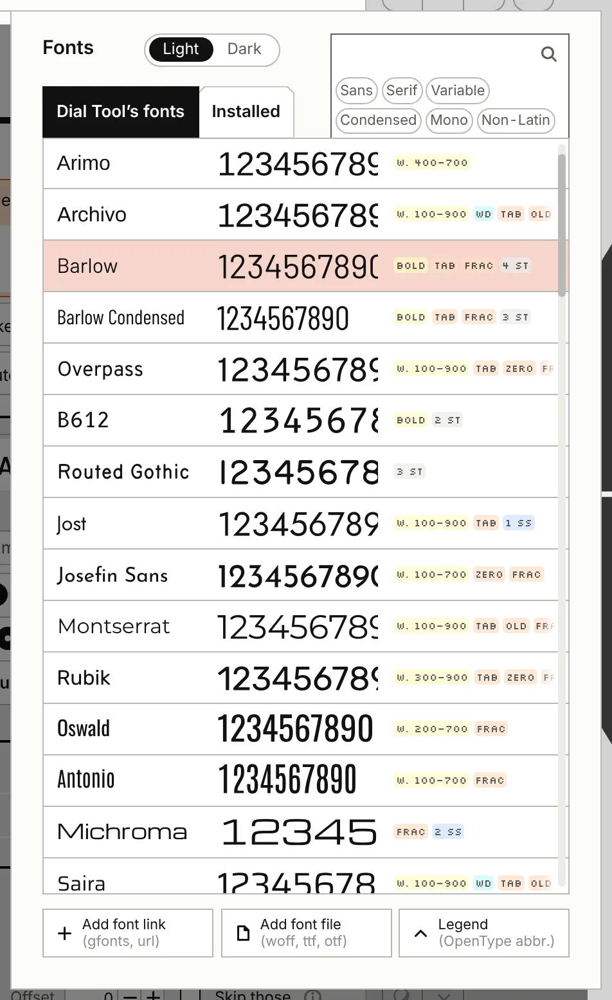
①②③④⑤⑥- ①Light · Dark
- The ground under the previews.
- ②Search
- Find a font by name.
- ③Filters
- Sans, Serif, Variable, Condensed, Mono, Non-Latin. Each adds its fonts; none shows them all. Fonts you added show only with no filter on.
- ④Dial Tool’s fonts · Installed
- Installed lists your computer's fonts where the browser allows it (Chrome, Edge). It asks the first time.
- ⑤A font's line
- Its name in its own face, its numerals, stickers for what it holds. Press it to choose; the sheet closes.
- ⑥Legend
- What the stickers mean.
- Add font link
- A Google Fonts link or family name, or a link to a font file.
- Add font file
- A .ttf, .otf, .ttc or .otc from this computer. The browser keeps it, under “Added by you”.
Press beside the sheet, or Escape, to close it.
Hands
All hands, then a tab for each hand.
All hands
- Show hands
- Shows or hides all three hands. Starts on.
- Motion
- The menu beside it: how the seconds hand moves, sweep · quartz · 1/s · 6 beats/s · 8 beats/s. Starts sweep.
Hour · Minute · Seconds
Tabs: the rows under them edit the chosen hand.
- Show
- Draws this hand. On for all three.
- Bevel
- Lights one half of the hand and darkens the other, by the shadows' light; preview only. Its strength is Bevels % in Shadows, with Shadows on or off; not on a disc hand. Starts off.
- The hand's box
- The chosen hand drawn large, its shape's name under it. Drag its tip for Length, its tail end for Tail, either edge for Width (both edges move together); pointed at, that side lights in the selected guide's colour.
- Grips on a disc · the widest place
- On a disc hand the tip sets Length and the edges Disc Ø, with no tail. On a shape with a widest place, drag a width edge along the hand to move that place: Widest at %, its bulge or where its tip starts.
- Colour
- The hand's colour; first beside the box.
- Length
- From the pivot to the tip. On a disc hand: where its marker's outer end is. Range 0.5–30 mm; starts 8.25 hour · 13.8 minute · 13.8 seconds.
- Disc Ø
- A disc hand's size. Range 0.5–30 mm; starts 8.0.
- Marker
- A disc hand's marker, Hole · Mark: cut out of the disc, or painted on it in its own colour. Starts Hole.
- Hole · Mark
- The marker's shape, bar · wedge · dot. The label reads Mark when Marker is Mark. Starts bar.
- Hole length · Hole width
- The marker's size: length 0.05–10 mm, 1.6 to start; width 0.02–5 mm, 0.6 to start. They read Mark length · Mark width when Marker is Mark.
- Mark ink
- The painted marker's colour; only when Marker is Mark. Starts white.
- Inside the disc
- Keeps the marker inside the disc's edge. Starts on when you make a hand a disc.
- Width
- Across the hand. Not on a disc hand. Range 0.02–4 mm; starts 1.43 hour · 1.0 minute · 0.15 seconds.
- Tail
- The part behind the pivot. Not on a disc hand. Range 0–10 mm.
- Round ends
- Rounds the hand's ends. Baton, pencil, sword, arrow, syringe, breguet, lollipop and disc (its marker's ends); not dauphine or leaf. Range 0–2 mm; starts 0.
- Tip length
- The pointed tip. Pencil, sword, arrow, syringe, breguet. Range 0–10 mm.
- Head width
- The arrow's head. Arrow, syringe. Range 0–6 mm.
- Circle Ø
- The ring on the hand. Breguet, lollipop. Range 0–6 mm.
- Widest at %
- Dauphine: where it is widest, 0–100 % of its length. Leaf: where it bulges, 20–70 %, 37.5 to start.
- Barrel from %
- Syringe: where the barrel starts. Range 0–100 %.
- Circle at %
- Breguet, lollipop: where the circle sits. Range 0–100 %.
- Hub Ø
- A round boss at the pivot the hand sits on. Not on a disc hand. Range 0–4 mm; starts 2.4 hour · 2.0 minute · 0 (none) seconds.
- Counterweight Ø
- A disc on the tail. Every shape. Range 0–4 mm; starts 0 for all three.
- Hollow wall
- Draws the hand as an outline of this thickness. Every shape. Range 0–1 mm; starts 0 · solid.
- Cap on this hand
- With the seconds hand off: puts the cap on the topmost shown hand. Under that hand's tab only. Starts off.
- Cap Ø · Cap colour
- The cap over the pivot. Under the topmost shown hand's tab, when the seconds hand is on or Cap on this hand is ticked. Range 0–4 mm; starts 1.6.
- Shape
- Last, a row of its own under every row; the tiles carry no words, the box names the chosen shape.
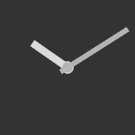
baton 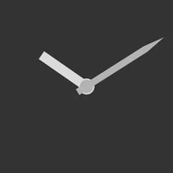
pencil 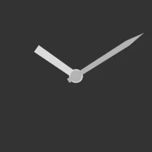
sword 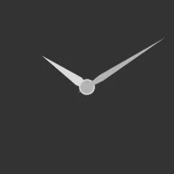
dauphine 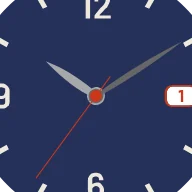
leaf 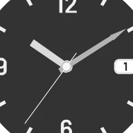
arrow 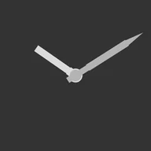
syringe 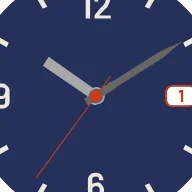
breguet lollipop 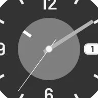
disc
The dashed + tile, a hand of your own from an SVG file, is not built yet.
Windows
Four windows as cards: 12 · 3 · 6 · 9.
Which panes a window shows
| Pane, in order | date | day | am · pm | moon |
|---|---|---|---|---|
| Window at … | ||||
| Shape | ||||
| Font |
12 · 3 · 6 · 9
- 12 · 3 · 6 · 9
- Cards, each a small dial: the window filled when shown, an outline when not. They are tabs for the panes below; a window never used moves to its card's place when its card is first pressed.
- Show
- Shows the chosen window. Off, the tab is empty under it. On for the window at 3, off for the others.
- X-ray
- In the preview's corner, beside Case, while a date, day or am · pm window is shown: every disc drawn whole under the plate, the selected one on top. Preview only, never exported.
Window at …
- Position
- On the heading line: 3 · 6 · 9 · 12 · 4, then ···; the heading says where the window is. ··· opens Time: every place, 12 · 1:30 · 3 · 4 · 4:30 · 6 · 7:30 · 9 · 10:30, and a field for any time, where 2:15, 2.25 and 14:15 all mean a quarter past two. Set elsewhere, ··· shows the place. Starts 3.
- Complication
- What the window shows. Each kind keeps its own shape, sizes, text, colours and font in this window; Position and Radius are shared.
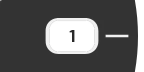
date day am · pm 
moon 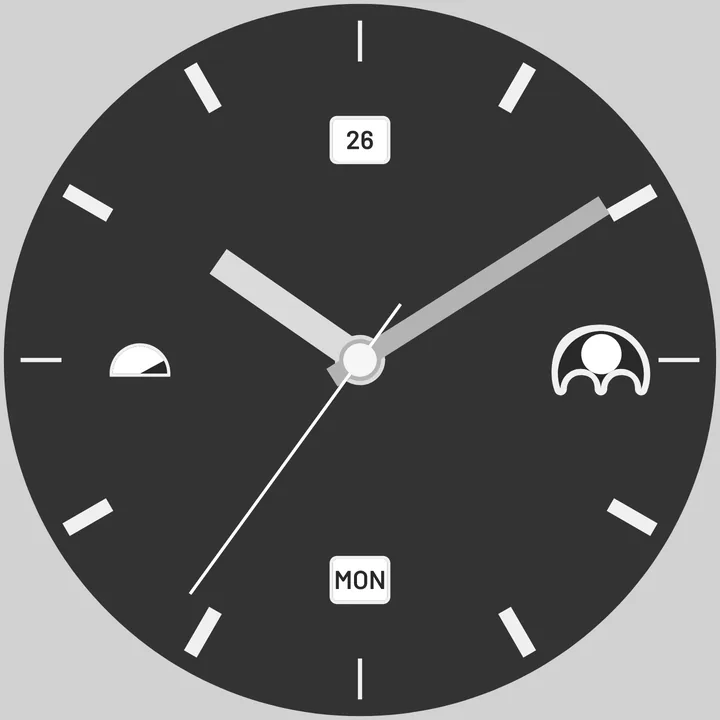
Starts date. - Big date
- Under date: two holes, the tens and the units, each on a disc.
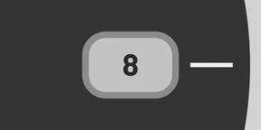
date 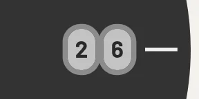
Big date - am · pm
- Follows the time shown, AM · PM beside the time under the panel.
- Picture
- A moon window's picture, Arch · Phase · Line. Starts Arch.
- Moon age, days
- 0 new moon, 14.8 full. Only when Follows the date is off. Range 0–29.5; starts 14.8.
Shape
- Shape
- The hole's shape, buttons on the heading line with no words; to start, as its kind: rectangle, a moon's arch, an am · pm's half, a big date's pair. Arch shows only for moon, half only for am · pm.
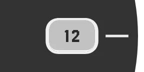
rectangle 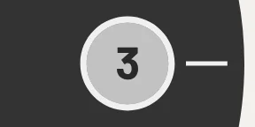
circle 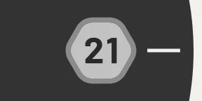
polygon arch · moon 
half · am · pm - Radius
- From the centre to the window. Range 2–18 mm; starts 11.5 · new window 10.5.
- Width · Height
- Rectangle, arc and a big date's pair: width 0.5–8 mm, 3.85 to start; height 0.5–5 mm, 2.5 to start; 2.6 and 2.0 on a new window. The link pill between them keeps their ratio; off to start.
- Width
- Arch, half. Range 0.5–8 mm.
- Ø
- Circle, polygon. Range 0.5–8 mm.
- Sides
- Polygon. Range 3–12; starts 6.
- Corner
- Rounds the corners. Rectangle, polygon, pair. Range 0–2 mm; starts 0.8 · new window 0.2.
- Turn it with its radius
- Turns the hole along its radius; not for arc. Only off the quarters: at 4 it turns 30°, at half past four 45°. Starts off.
- Turn the text with it
- Under it, for date and day: the text turns with the hole. Starts on.
- Frame
- The frame's colour; first of the colours.
- Disc under it
- The disc seen through the hole. Reads AM half on an am · pm disc, Moon on a moon in Phase. Starts white.
- Picture
- am · pm and moon: the picture's colour, the frame's when unset. Reads Sky on a moon in Phase, Text on am · pm Words, PM half on an am · pm disc.
- Shade
- A moon in Phase: its dark side.
- Neighbours
- Date, day with Neighbours ticked: their colour, the text's (or frame's) when unset.
- Frame width
- The printed frame round the hole. Range 0–0.6 mm; starts 0.3 · new window 0.15.
- Clearance
- The room round the hole kept free of print. Range 0–1 mm; starts 0 · new window 0.25.
- Follows the date
- Date, day, moon, big date: shows the date set in the bar, not typed text; a moon shows its age. Starts on.
- Neighbours
- Date, day: the disc's next places show where the hole allows. Starts on.
- Names
- A day window following the date: EN · TR · DE · FR · IT. Starts EN.
EN 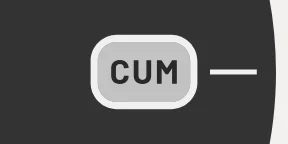
TR DE - Written
- Short · Full · Custom. Full writes the language's own full names in capitals. Starts Short.
Short 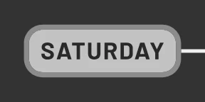
Full - Days
- With Custom: seven fields, each showing its day's short name; a blank one keeps it.
- Shows
- am · pm: Disc · Words. Starts Disc.

Disc Words - Words
- With Words: two fields, AM and PM unless you type your own.
- Jumps
- am · pm Disc: snaps to am at midnight and to pm at noon, as a date disc jumps; off, the disc sweeps round once a day. Words always jump. Starts off.
- Inside the case
- Date, day, am · pm Disc: its disc may not pass the case; off for a face on a screen. A disc past the case gets "Its disc passes the case by N mm": move the window in, or untick to let it. Starts on.
A picture of your own for a moon or an am · pm disc, from an SVG file, comes after v1.
Font
- Text
- Date, day, big date, when not following the date: what the window says. Starts 17 · MON on a day.
- The font box
- The font and its name (press either for the font sheet), the text's colour (the frame's when unset), its language and styles, then Size % (20–100 % of the hole's height, 100 to start, 62 on a new window), Tracking (−200–800), the font's axes and OpenType features. Without a font of its own, the window uses the top numerals ring's.
- Same font as Numerals
- Gives the window the top numerals ring's font again, named as that ring is; shows only when the window has a font of its own.
Export
Files at true size, print, links, settings.
Export a file stays in view; the panes under it scroll.
Export a file
- Vector · PDF · SVG
- The dial at true size as a PDF or an SVG.
- Keep numerals as text in the SVG
- The SVG keeps numerals as text, not outlines; the font must then be installed where the file is opened. PDF and PNG stay outlines. Ignored while Mono print mask is on. Starts off.
- Image · PNG
- The dial as a picture; the dpi is written into the file, so it opens at true mm.
- dpi
- The PNG's resolution; the line under it gives the page size at that dpi in px. Past 16384 px a side the PNG is refused, with the dpi to use; past 4096 × 4096 px the log warns: if it is empty in Safari, lower the dpi. Range 72–2400; starts 600.
- Wear OS · APK
- A Wear OS watch face (.apk, 450 × 450 px) to sideload onto your watch, signed with a shared debug key: for sideloading, not for the Play Store.
- Its name on the watch
- The watch face's name; it makes the package name too, so several dials can live on one watch. Starts Dial Tool when empty.
The watch face's name travels in a settings file, not in a link.
- Mono print mask
- The dial in one ink, as a mask for etching or printing. Where a ring lies on a ring below in another colour, the two merge in one ink; the note under it names them ("Lost in one ink: …"), and so does the log on export. Knock them out of the ring below (Give way to rings above), or export each ink alone. Starts off.
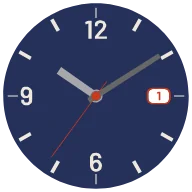
colour Mono print mask - Inverted
- Toner everywhere inside the dial but the marks, for sunk marks. Shows with the mask. Starts off.
- Cut lines
- Each window's and the centre hole's outline, for cutting; off, the mask holds only what is etched. Shows with the mask. Starts on.
- Outline and registration marks
- The blank's edge, and a mark in each corner of the page, to lay films on the blank and on each other; with too small a margin, the edge alone (give the page more Page margin under Dial). Shows with the mask. Starts off.
- Hidden rings still cut
- A hidden ring still knocks out and skips the rings under it, so a film made by hiding rings keeps its holes. Starts off.
- What the windows show
- Off, the windows' holes stay empty: discs, numbers and pictures are left out, for a printer who prints the face alone (hide the hands under Hands). Shows with the mask off and a window on. Starts on.
- Mirrored, for toner transfer
- The dial, its mask and the print sheet mirrored, for toner transfer; the spec sheet and the Dial files of A set of files stay plain. Never send a mirrored file to a pad or screen printer. Starts off.
- Inks · A mask per ink
- One mask PDF for each colour the dial is printed in; the button counts them and its tooltip lists their hex. Allow the browser to download several files. Shows with the mask.
- Sheet · Sheet PDF
- A page of copies at true size, to print, mirrored and masked as the ticks above say; beside the button, a small drawing of the page and each copy on it. Print at 100 %, not "fit to page".
- Paper
- A4 · Letter · A5. Starts A4.
- Copies
- 0 is as many as fit. The note under it says how many copies go on the paper, and whether the rows are staggered, or that the dial doesn't fit. Range 0–60; starts 0.
- Room between
- The gap between copies. Range 0–20 mm; starts 3.
- A cut line round each
- A circle round each copy, to cut along. Starts off.
- Spec · Spec sheet
- The dial with its measures, for a supplier: an SVG, A4 on its side, each ring's radius marked and numbered. Always plain: no mask, not mirrored.
A set of files
- Dial · PDF · Dial · SVG · Dial · PNG
- The dial plain: no mask, not mirrored. Starts Dial · PDF on · the rest off.
- Mask · PDF · Mirrored mask · PDF · Mirrored mask · PNG
- The mask, as each name says.
- Print sheet · PDF · Spec sheet · SVG
- The sheet as Print says; the spec sheet plain.
- Export ticked
- Writes every ticked file in one press; with nothing ticked, the log says so.
Moving picture
- Motion · MP4 · GIF
- The dial running from the time shown, at the bar's speed, without guides. MP4 needs a browser with WebCodecs (Chrome, Edge, Safari 17): H.264, else VP9 with a warning in the log.
- Seconds
- Its length.
- 1–30 sstarts 4
- fps
- Frames a second.
- 6–60starts 30
- Size px
- Its width and height. A GIF is at most 600 px and 25 frames a second; the note under it counts the frames.
- 240–2160 pxstarts 1080
Share dial as link
Copy link sits on the heading line, open or folded.
- Copy link
- Copies a link that opens this dial anywhere. It says Copied, or Not copied; then the link is selected in the box and written in the log. Once the link opens, the address bar shows the site alone, and a reload keeps the dial.
- The link
- The link on one line, and its length in characters. Fonts travel by name: whoever opens it needs the same fonts.
- Versions · Copy set link
- One link holding every dial saved under Versions. Shows with two saved dials or more.
A link holds only what you changed and may stop opening when the tool changes; to keep a dial, save a settings file.
Settings file
- Save… · Load…
- A settings file (.json) keeps this dial with every value, to open again here or on another computer. After Load the heading names the file, and Save… offers that name again (a browser can't write over it).
Log
What each export, copy, load and reset said. Every export writes the thinnest line and the narrowest gap to it.
Gallery
The Gallery pill on the panel's top line opens this tab and pane and folds Export a file.
- Gallery
- Dials to open and take apart: the gallery's dials, then the five first examples, the guidebook's classic dials.
- Edit this dial · In a new tab
- A press lifts a card and shows these: open it here, in place of yours, or in a new tab beside it. Escape or a press elsewhere puts it back. Your own saved dials are under Versions on the preview.
Corners and bar
The preview's four corners, and the bar.
Top left
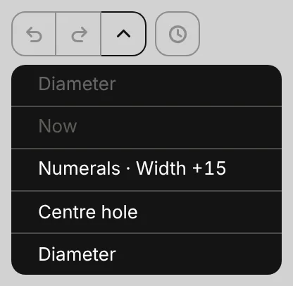
- Undo · Redo
- One step back or forward; the tooltip names the step. Pale when there is nothing that way.
- The steps, named
- The chevron drops the steps, newest first: redo steps faint above the Now line, undo steps under it. Press a step to undo or redo to it; "Nothing to undo yet." when empty. Range up to 20 each side.
- Versions
- Your saved dials, kept in this browser; a link or a settings file takes one elsewhere.
- Versions, open
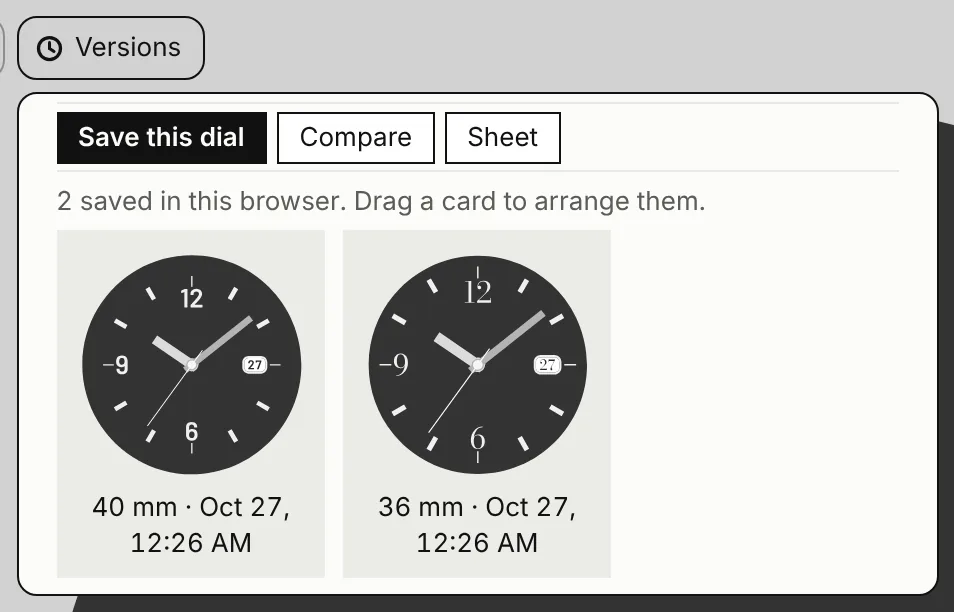
Save this dial · Compare · Sheet on its top line, then how many are saved, then the saved dials, three across, each named by its Ø and when.- Save this dial
- Keeps the dial as it is now, named by its Ø and the date and time. The next save past the last replaces the oldest, and the note says which. Range up to 9.
- Compare
- Every saved dial side by side at one size, the panel away. With 2 or more saved; Compare again, the eye, E or Esc ends it.
- Sheet
- Every saved dial on one A4, saved as
dials-N-sheet.svg. With 1 or more saved. - A card
- A press: Edit this dial · In a new tab · Remove. Drag a card to arrange them.
One link holding every saved dial is Copy set link, in the panel's Share dial as link pane, with 2 or more saved. Opened elsewhere, it shows them in Compare: Add to my Versions · Just look.
Top right
- Guides
- Lines and circles to place things by, preview only. On the Rings tab the chosen ring's guide and handles show even with Guides off. Starts off.
- Case
- A case round the dial, preview only: No case · Field · Diver · Emre · Dress. The switch shows the case's name. Starts No case.
- X-ray
- The windows' discs under the plate, preview only. There only while a date, day or am · pm window is on. Starts off.
Guides
The chevron beside Guides opens the list: which guides, and their colours. A press elsewhere or Esc closes it.
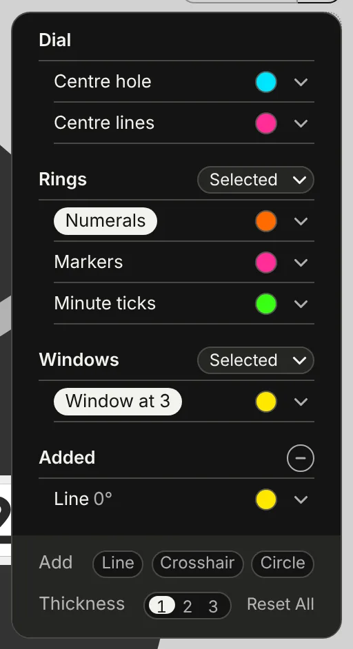
①②③④⑤⑥⑦⑧- Dial
- Centre hole (cyan) and Centre lines (pink). Both on.
- Rings
- Its menu: Selected · All · None; then a line per ring, the chosen ring's name in a pill. Starts Selected.
- Windows
- The same menu; a line per window that is on, "Window at" its place. Hidden with no window on. Starts Selected.
- Added
- The guides you added, a line each; the minus takes the last one away. There once you add one.
- A line's colour
- Its dot or chevron opens None and seven colours: pink · cyan · green · yellow · orange · purple · white. None hides it: an empty ring, its name grey.
- Add
- Line · Crosshair · Circle: a new guide in the first unused colour. A line takes its °, a crosshair ° and r, a circle r, typed on its line. Starts 0° · r a quarter of the Ø.
- Dragging an added guide
- While the list is open and Guides on, each added guide has a handle in its colour: a line a triangle, dragged round; a crosshair a square, dragged anywhere; a circle a disc at half past four, dragged in or out. Range line 0–180°.
- Thickness
- How thick every guide draws: 1 · 2 · 3, each a step of the thinnest. Starts 1.
- Reset All
- Every guide as it started, its colours too, after "Reset all guides?": ✕ keeps them, ✓ resets.
Bottom left
- Backdrop
- The colour behind the dial, preview only. The switches' outlines turn black or white to stay seen on it. Starts brown #97725B.
- Shadows
- Shadows from one far sun, preview only. The chevron opens the pane: the light, and how high each part stands. Starts off.
Shadows
The pane opens upward over the panel's column, the dial in view. A press elsewhere or Esc closes it.
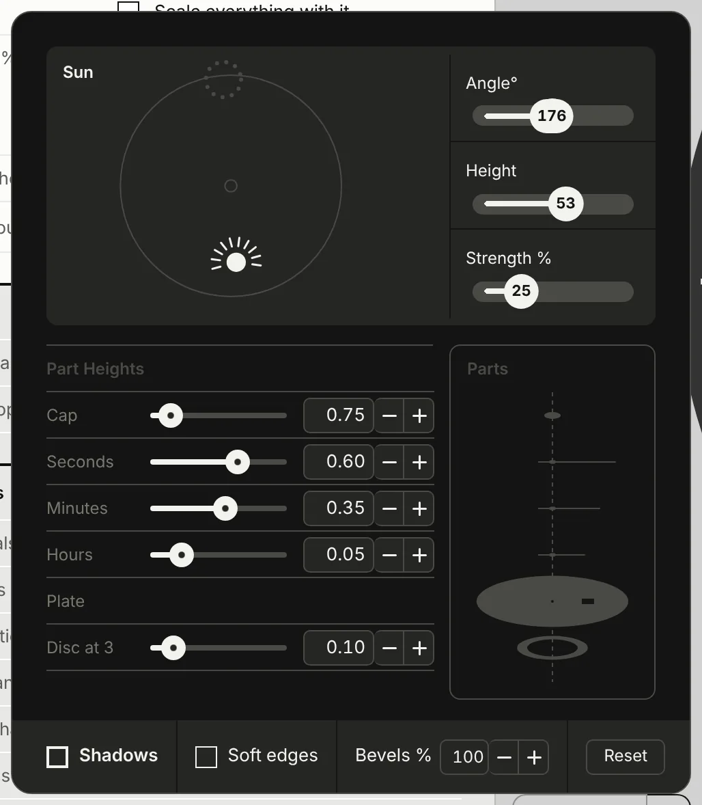
①②③④⑤- Sun
- Drag anywhere in the picture: round sets the angle, toward the middle sets it higher. Its rays lengthen with Strength.
- Angle°
- Where the light comes from. Range 0–359°; starts 176.
- Height
- The sun over the plate. Shadows are never longer than a 20° sun throws. Range 5–85°; starts 53.
- Strength %
- How dark. Range 0–100 %; starts 25.
- Part Heights
- Each part's height over the plate, in steps of 0.05 mm: Cap 0–2 mm (0.75) · Seconds 0–1.5 mm (0.6) · Minutes 0–1.5 mm (0.35) · Hours 0–1.5 mm (0.05). Range 0–2 mm cap · 0–1.5 hands.
- Plate
- The reference; nothing to set. Starts 0.
- Disc at …
- A row per window showing a disc, named by its place: how deep the disc lies under the plate. Range 0–1 mm; starts 0.1.
- LIMIT
- The heights keep their order, cap over seconds over minutes over hours, 0.05 mm apart; a hidden hand doesn't count. A value at its end flashes LIMIT in red by the name.
- Parts
- The parts drawn apart, side on, each on its row's line. The part of the row under the pointer turns white; a red line drops to the plate, dashed for the piece that row changes.
- Shadows
- The same switch as the corner's.
- Soft edges
- A small soft edge on the shadows. Starts off.
- Bevels %
- How strong the hands' bevels are. A hand's own Bevel turns its bevel on. Range 0–100 %; starts 100.
- Reset
- The sun back to 270° at 35° and every part's height, discs' depths too, to the code's own; leaves Shadows on or off.
Bottom right
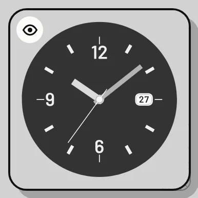
- Tiny preview
- The dial at its real size, opened in the button's place; drag it anywhere. No guides, X-ray or case. A tap wakes its eye for 2.4 s; the eye, top left, puts it away.
- The dial alone
- The panel slides away; the bar stays. In Compare, it ends Compare.
- The showcase
- A press unfolds the words Activate showcase; only the words enter show mode. A press again or elsewhere folds them. In show mode it is the way out. Hidden narrower than 860 px.
The bar
Along the window's foot: the time and how it runs on the left, the timeline across the middle, the view's three squares on the right. None of it changes the dial's design.
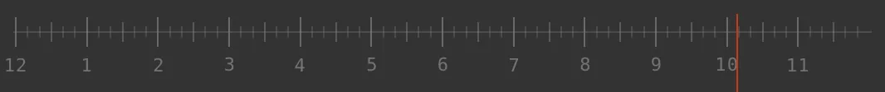
⑦- ①Play · Pause
- Runs time from the time shown, at the speed set. The triangle flashes with the movement's beat, at most 6 a second unless the beat is faster. Space plays or pauses.
- ②Speed
- How fast time runs, on one track: its first part, two thumbs wide, holds 0.1 · 0.25 · 0.5 · 1× and the thumb snaps onto them; from the dot at 1× it runs smoothly on to 720×. The ends are named 0.1X and 720X; the speed rides over the thumb, the one white thing on the bar, and turns into a pill while you drag. On a phone it is written on the thumb. Starts 1×.
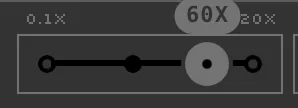
- ③Time
- The time shown, h:mm:ss. Press it and type:
15:20or3:20 pm, and the half of the day follows. ← → move it a minute, with ⇧ an hour. - ④AM · PM
- Morning or afternoon: a press flips 12 hours. The hands look the same either way; an am · pm window follows it.
- ⑤Date
- The day the dial shows, day over month, touching AM · PM; a date or day window shows it. Until you set one it is today's, wherever the dial is opened. A press opens its popup.
- ⑥Now
- The time it is now, and the date back to today.
- ⑦Timeline
- The twelve hours of the half shown, a ruler cut finer the wider the window. Drag anywhere along it to scrub; a tap that doesn't move snaps to the nearest hour, or to 10:10. The hours under it are buttons: a press sets that hour; the hour shown is bold. On a phone every other hour is written. The red needle stands on the time, from the ruler down to the window's foot.
- ⑧Zoom · Fit
- Zoom outZoom inFit Three joined squares: ×1.4 out or in about the middle; Fit brings the whole dial back. Scroll or pinch zooms too, out to a quarter of Fit; right-drag or two fingers move the dial. On a phone, Fit alone.
The date's popup
One line over the date. Esc or a press elsewhere closes it.
- ①Weekday
- The day's name, written, never chosen: it follows the date. Its box keeps one width, so the line doesn't move as the name changes.
- ②Day · Month · Year
- Each a menu. A month or year with fewer days keeps the day as near as it can: 31 Jan, then Feb, is 28 or 29 Feb. Years run 50 either side of the one shown.
- ③− +
- A day earlier or later, across months and years.
On the dial
- Hover
- Under a mouse, a part outlines with its name: the ring's name, Hour hand, Minute hand, Seconds hand, Cap, Date window, Day window, AM · PM window, Moon phase window, Plate. Not in show mode.
- Click
- Opens that part's tab. A second click on the chosen ring picks that numeral or mark for Edit one numeral.
- Empty canvas
- A press deselects, and unfolds the switches' words for 3 s.
- Labels
- A button's name shows under the mouse pointer or keyboard focus, never under a finger. The switches' words unfold at page open and under the pointer.
Show mode
The whole watch round your dial, lit.
Its parts, by number
- ①Title line
- Dial Tool Show Case and Help; the version, the Gallery and the unit box are hidden, and the mark does not open About. The round swatch at its end switches the panel between greys and the backdrop's colour.
- ②Tabs
- Dial · Watch · Light · Export. Show mode opens on Watch, and each mode keeps its own last tab. Starts Watch.
- ③The tab's panes
- The rows of the tab in hand; they scroll, except Light's Style and Lighting, which stay put.
- ④Shenanigans
- Shadows · Blurs · Gradients, Flare · Bevels · All: on/off shortcuts, always in view at the panel's foot.
- ⑤The watch
- Your dial in its case, strap and light. The pointer or one finger moves the sun, right-drag moves the drawing, the wheel zooms, two fingers pinch.
- ⑥Top left
- Undo · redo, the steps, named, and Versions, as on the dial side.
- ⑦Backdrop
- Opens show mode's own backdrop popup: colours and gradients behind the watch.
- ⑧Bottom right
- The dial alone, over the rays switch, which takes you back to the dial side.
- ⑨Bottom bar
- Time and speed, the date, the timeline, zoom out · zoom in · Fit; Fit frames the case as View says.
Into show mode and back
- The rays switch
- At the preview's bottom right, under the eye. A first press turns the rays and slides out the words Activate showcase; press those words to go in. The switch again, or a press anywhere else, folds them away. Hidden at 860 px wide or less: show mode is for a Mac or an iPad.
- Activate showcase
- A copy of the panel slides off left, the show panel slides in from the right, and the dial moves and zooms to where the watch stands; then the watch fades in. The bar stays.
- Back
- In show mode the same switch, filled with the panel's colours, takes you back with one press: the watch fades out, then the panels swap back.
- Session
- A session closed in show mode reopens in show mode, with no movement.
- Keys
- X and G do nothing in show mode.
Colours
The Dial tab: only the dial's colours and heights change here; everything else of the dial is set on the dial side.
- Dial
- The plate's colour.
- Rings
- A line per ring, by its name or its kind: its dot, its kind mark, its colour. A band with sectors shows small swatches and the note "N sectors".
- Hands
- Hour hand · Minute hand · Seconds hand, each with its dot and colour; the cap is a square on its hand's line, noted "hand · cap". A Cap line appears only when the cap is not shown on a hand.
- Windows
- A line per window that is on, e.g. "Date at 3", with its frame · disc · print colours and a grey note such as "frame · disc · figures".
- The dot
- Filled: the part is shown on the watch. A ring: it is hidden, and its line greys.
- Swatches
- One colour is a pill with its hex; several are small squares, six to a line. Folded, the pane's line shows every colour as tiny swatches.
Inks
- On the dial
- A line per exact colour: its chevron, "1 part" or "N parts", the ink's swatch and its height under Height, mm. The swatch recolours every part of that ink. All lines start closed.
- 0–0.5 mm, step 0.01starts 0.21
- Two inks
- Opened, an ink's line gives Two inks in its height's place, and under it each part with its own height. With Two inks on, each part gets an A | B pill; a two-part ink shows the letters only, A then B.
- On the discs
- A line per window: its prints' colours and one height, the prints' height.
- starts 0.21 mm
- Disc depths
- A line per window with a disc: the disc's colour and its depth under the plate; the same number as the Shadows pane's.
- 0–1 mm
- All inks at once
- Adds or takes away the same mm on every printed height, each ink keeping its own. Typed, up to ±0.5.
- −0.3–0.3 mm, step 0.01starts 0
Hands
- Cap
- Shown only when the cap shows: a square swatch and Cap height. Starts 0.75 mm.
- Seconds · Minutes · Hours
- Each its dot, a square swatch and its height above the dial under Height, mm. Starts 0.6 · 0.35 · 0.05.
- Seconds · Minutes · Hours (pills)
- Filled when that hand has a bevel. A hidden hand's pill is hidden.
- Bevels %
- The bevels' strength; the same number as the Shadows pane's. Range 0–100; starts 100.
Watch
The Watch tab.
- View
- What Fit frames, and what is exported: Detail · Whole watch · Dial. Detail is lug tip to lug tip; Whole watch the whole drawing, a bracelet to the wrist's horizon and 6 mm of ground; Dial frames as the dial side. Starts Detail.
- Case
- Dress · Field · Diver · Emre, tiles with their outline. The same setting as the dial side's Case. Starts Diver.
Dress Field Diver Emre - Metal
- Fe · Au · Al · CuSn · Ti · Black: the metal's own colour. Starts Au.
- Case colour
- Your own case colour; unset, it shows the metal's.
- Insert
- The diver's bezel insert in two colours: Black · Blue · Green · Pepsi · Batman · Coke · Root beer (the tile says R. beer) · Sprite. Shows with the Diver only. Starts Black.
Strap
- Strap
- Leather · NATO · Bracelet · Links. Bracelet and Links (Emre's H-links) are offered on the Diver only. Starts Leather.
leather NATO bracelet links - Leather
- The leather's colour. Shows with Leather.
- Pattern
- The NATO's pattern: Bond · Regimental · Khaki · Black · grey · Olive · Grey · Solid. A pattern picked brings back its own colours. Shows with NATO. Starts Regimental.
- Stripe 1 · Stripe 2 · Stripe 3
- Each stripe's colour, starting from the pattern's; a change makes them yours. Shows with a NATO that is not Solid.
- Colour
- A Solid NATO's one colour. Starts #2a3550.
Light
The Light tab's top; it stays in view under the tabs.
- Style
- Engineer · Miyazaki. Starts Miyazaki.

Miyazaki · Dramatic Engineer · Dramatic Miyazaki · Flat Engineer · Flat - Lighting
- Dramatic · Flat. With Gradients off, Flat is drawn whatever this says. Starts Dramatic.
Sun
On the canvas the pointer or one finger moves the sun: its direction from the middle is where the light comes from; nearer the middle, higher, 85° at the centre down to 10° near the edge. One sun lights both sides: the dial side's shadows use the same Angle, Height and Strength.
- The sun box
- The sun's picture with Angle · Height · Strength as values; drag in the picture to move the sun.
- Angle °
- Where the light comes from, as a clock angle.
- 0–359starts 176
- Height °
- How high the sun stands.
- 5–85starts 53
- Strength %
- How dark the shadows are. The Shadows pane's Strength.
- 0–100starts 25
- Soft shadows
- Softens every shadow of the watch, a 0.07 mm edge. The same switch as Shenanigans' Blurs.
- starts off
Flare
The tick on the pane's heading line turns the flare on or off; on to start. With Flat lighting the pane says "The flare shows with dramatic lighting."
- Kind
- Arc · Dot. Shows with Miyazaki only.
- starts Arc
- Size %
- 20–300starts 100
- Case colour %
- How close the flare's colour comes to the case's.
- 0–100starts 45
- Brightness %
- 0–300starts 100
Glass reflection
- Width %
- 0–400starts 100
- Length %
- 10–300starts 100
- Shine %
- 0–100starts 100
Effects
- Blurs, flare, shine, outline
- The tick on the pane's heading line. Off, the watch is drawn without its costliest layers — blurs, the flare, the glass shine, the outline round the metal — and the Flare and Glass reflection panes are hidden. Starts on.
Export
The Export tab. The file is framed as View says: Detail or Whole watch; Dial exports as Detail. Its name is the dial's name, the case and the style, joined by hyphens, .png or .pdf.
- Image
- PNG: the watch as a picture.
- Page
- PDF: one page in mm at the drawing's real size, the picture inside it as a JPEG.
- Pixels
- The picture's longer side. Range 1000–8000, step 100; starts 3000.
Shenanigans
Shortcuts only, at the panel's foot: each sets the same thing as its row elsewhere, and every other setting of it stays.
- Shadows
- Every shadow, on or off. Starts off.
- Blurs
- The Light tab's Soft shadows. Starts off.
- Gradients
- The backdrop's gradient, Dramatic's spotlight and the outline's light. Off: one colour and flat lighting. Starts on.
- Flare
- The Flare pane's tick. Starts on.
- Bevels
- The hands' bevels. Starts on.
- All
- The five on or off together.
Backdrop
- Auto
- The paint's own ground: Stone #B9B3A6 for Engineer, Umber #877F6D for Miyazaki, following Style. Any other pick turns it off. Starts off.
- One colour
- Stone · Umber · Paper · Bone · Sky · Sage · Olive · Brick · Slate · Night, then yours, then +.
- Gradient
- Dusk · Sea · Clay · Fog · Dune · Moss · Steel · Plum · Ember · Ink, at 135°, then yours, then +.
- + · −
- + adds the backdrop in hand to yours, in its own kind's line; when it is already yours it reads −, which takes it out. Disabled for the other kind: "Pick a colour to add it" · "Pick a gradient to add it".
- Colour
- At the foot: a dot and the hex; opens the colour pop-out.
- Gradient
- At the foot: its two ends, each opening its pop-out, "Gradient · first" · "Gradient · second".
The eye
- The dial alone
- In show mode the panel slides away right and the bar slides down out of the window; the title line stays, flush right, 16 px from the edge. The watch re-fits as the panel goes. Press again to bring them back.
What is drawn
- Dress
- After the Patek Philippe Calatrava 5196, scaled to your dial. Starts 37 mm.
- Field
- After a 1939 military cushion case. Starts 40 mm.
- Diver
- After the Seiko SPB143, with a 60-divot bezel and the Insert. Starts 40.5 mm.
- Emre
- Emre's prototype, with rails. Starts 22 mm.
- Case height
- Each case casts a shadow from its own height, a share of its width: Dress 8.1 mm, Field 11.2, Diver 13.0; Emre 2.0. The shadow is that height over the sun's slope, never longer than at a 20° sun; no row sets it.
- Bracelet · Links
- Drawn closed round a wrist: 1 mm flat past the end link, then over a 12 mm wrist radius, foreshortened to the horizon about 13 mm on, each row lit by its tilt. Leather and NATO are drawn flat.
- Engineer
- A technical drawing: every part outlined in ink, each facet in light · body · shade tones by where the light falls, hard shadows.
- Miyazaki
- No lines: each part one base colour cut by a dark and a light crescent in deeper colours, a flare, and one white outline round the metal only.
- Dramatic
- A still spotlight on the watch's centre, whatever the sun: the ground keeps its colour out to 45 % of the radius, then darkens to × 0.82 at 70 % and × 0.57 at the rim; over a gradient, black toward the rim. Dramatic also brings the flare.
- Flat
- No spotlight and no flare.
- Shadows
- Each shape swept along the light, black at one strength; where shadows overlap they never double.
- The dial
- Dial Tool's own shapes, raised by the Inks heights, the hands at their heights with their bevels.
What is kept where
- File and session
- Everything of show mode: the settings file writes the whole state, and the session is saved in this browser when the page is hidden.
- Not in a link
- View, Metal, Case colour, Insert, Pattern and its stripes or colour, Style, Lighting, the Flare and Glass reflection rows, Effects, Bevels and Gradients, the inks' heights, Two inks, the discs' prints' heights, All inks at once, Auto, the backdrop's second colour, your backdrops, Pixels, the round swatch, and being in show mode.
- In a link
- The dial's colours and its dots; Case, Strap and the Leather colour; the sun — Angle °, Height °, Strength %, Soft shadows (Blurs) and Shadows; the hands' heights, Disc depths and Bevels %; the backdrop's colour.
Keys and pointer
Keys work when you aren't typing in a field, and not with ⌘ Ctrl ⌥ held. Ctrl for ⌘ on Windows.
Keys
- ← →
- Time back or on a minute; with ⇧, an hour.
- Space
- Play or pause time.
- G H S X
- Guides, hands, shadows, X-ray: on or off. X only while a date, day or am · pm window is on; G and X do nothing in show mode.
- E
- The dial alone; ends Compare.
- ⌘Z · ⇧⌘Z
- Undo · redo (⌘Y redoes too). Not while a dialog is open.
- ↑ ↓ in a number
- One step; with ⇧, ten. Enter or Esc takes the value; ⌘Z takes it back.
- Esc
- Closes an open menu or pop-up, the Guides list and the Shadows pane; ends Compare.
Pointer
- Scroll · pinch
- Zooms about the pointer. Range out to ¼ of Fit.
- Drag · right-drag
- Moves the dial; right-drag in show mode too.
- Fine slider
- Hold a slider and move away from its track, up or down: the farther, the finer. A finger opens the controller instead. Range down to 1/20 speed.
- Typing a number
+0.5adds,x2multiplies,/2divides; a length takes a unit:12pt,0.5in,3cm,20lig,40thou. A comma works as a point.- Text ring Start
- Snaps to a position when it comes near. Range within 2°.
- A ring's handles
- On the Rings tab, guides shown: drag the chosen ring's handles, Radius, Size, Start and Span; the farther the pointer strays, the finer.
iPad and desktop
The same tool under a finger and under a mouse; where they differ.
Controls
- A slider
- Mouse: drag it; hold it and move away from the track, up or down, to go finer. Finger: a touch opens the controller over the row; keep sliding and the value follows. Range down to 1/20 speed.
- A row's name
- Mouse: a press opens the controller; a drag sideways changes the value, ⇧ ten times finer. Finger: opens the controller.
- The controller
- The same on both: the value over the knob, the slider, − and + with the name between. Esc, Enter or a press elsewhere closes it. Starts fades 1.2 s after you stop.
- A number box
- Mouse: type, or ↑ ↓; − and + step. Finger: type with the keyboard that comes up; − and + step.
The dial
- Move the dial
- Mouse: drag, or right-drag. Finger: two fingers. One finger never moves it, so a tap stays a tap.
- Zoom
- Mouse: scroll, or pinch on a trackpad; or Zoom out · Zoom in · Fit on the bar. Finger: pinch; or Zoom out · Zoom in · Fit on the bar.
- A part of the dial
- Mouse: under the pointer it outlines with its name; a click opens its tab. Finger: a tap opens its tab; no outline.
- Labels
- Mouse: a button's name shows under the pointer or keyboard focus; the corner switches' words unfold under the pointer; a hand's part lights while its row is under the pointer. Finger: a tap on empty canvas unfolds the corner switches' words for 3 s and deselects. Button names never show: they are in this page.
- Keys
- With a keyboard, on either: see Keys and pointer.
Narrower than 860 px
An iPad upright, a phone, a narrow window.
- The panel
- Becomes a drawer to drag up and down.
- The bar
- Keeps Fit alone, so pinch to zoom.
- The showcase switch
- Hidden.
Signs
Every picture the tool uses, by where it lives.
Tabs
Around the preview
Ring list
A ring
Hands
Windows
Gallery
Twenty dials to open and take apart.
Gallery
The pill on the title line, between the version and the unit box. It opens the Gallery pane, last in Export, and folds Export a file to give it room.
- A card
- Three to a line, each with its name; its note shows on hover. A press lifts it and offers two buttons; Escape or a press elsewhere puts it back.
- Edit this dial
- Opens the card's dial here, in place of the dial you have.
- In a new tab
- Keeps your dial; the card's dial opens in a new tab beside it. ⌘, Ctrl or Shift and a click open the card the browser's way.
Edit this dial puts the card's dial in place of yours: save a settings file first to keep it, or open the card In a new tab.
The cards, in order
- First dial
- Numerals · markers · minute ticks, on a 34 mm navy plate. Shows: numerals at 12 · 3 · 6 · 9 (Every 3) with markers at the other hours (Every 3, Skip those); a date window at 3.
- B-Uhr, type B
- Triangle at 12 · two dots · hour circle · minutes · hours · minutes 5–55 · five minutes · two bands. Shows: two numerals rings, small hours inside at r 7.4 mm and minute numbers 5–55 outside at r 11.85 mm, five of them nudged.
- Montgomery
- Every fifth minute in red · every minute · outer rail · five minutes · minutes · inner rail · hours. Shows: a railroad, ticks between two thin bands; two numerals rings at one radius, 17.5 mm, the every-minute ring skipping where the red fifths stand.
- Diver, bezel as rings
- Bezel triangle · 10–50 · bezel minutes · first 15 · black bezel band · bezel edge · triangle · bars · dots · minutes · band. Shows: a bezel drawn as rings on a 40 mm plate, a black band 3.6 mm wide at r 20 mm; a band of 12 sectors in two alternating blues.
- World time
- Cities · city marks · inner line · three 24-hour rings · day and night · hours · minutes. Shows: 24 city names as Custom labels on path; one 24-hour circle made of three numerals rings by Start and Span.
- 12 + 24 hours
- Triangle at 12 · hours 1–12 · hours 13–24 · hour marks · minutes. Shows: an inner numerals ring of Numbers, First number 13, Step 1, Start 30°, smaller, Tracking 150, with the OpenType feature tnum.
- Day and date
- Hour batons · minutes · rehaut · AUTOMATIC at 6. Shows: a day window at 12 shaped as an arc, and a date window at 3; both follow the date.
- Elapsed time
- Dot at 12 · hour marks · minutes 12 to 4, on a 30 mm black plate. Shows: a ticks ring of Count 21 over Span 120°, so the minutes run only from 12 to 4.
- Moon phase
- Hours · minute dots · stars. Shows: a moon phase window at 6 in an arch; a markers ring of 7 dots, Start −54°, Span 108°.
- Teal and coral
- Hours in Unica One · minute dots · hour dots. Shows: a round date window at 6 with no frame, on a coral Disc under it.
- Dress, am · pm
- Hours in Bodoni Moda · minute dots · hour dots. Shows: a round am · pm window at 6, Jumps off, so the disc sweeps round once a day; the minute dots skip under the hour dots.
- Complex inks
- Tachymeter scale · tachymeter band · minute tips · triangle · minute track · hour markers · hours · DIAL TOOL logo. Shows: six colours, one red on two parts, to split into inks in show mode's Inks; a date at 3 and a moon at 6.
- Field
- Hours · 24 hours · hour marks · minutes. Shows: an inner numerals ring of Custom labels "24, 13 … 23"; sword hands.
- Diver
- Triangle · bars · dots · depth · minutes. Shows: the depth "200 m · 660 ft" as a Custom label on path at 6; a date window at 3, where the bar at 3 gives way.
- California
- Triangle at 12 · batons at 3 · 6 · 9 · Roman and Arabic · minutes · track. Shows: Custom labels mixing Roman and Arabic, left empty at 12 · 3 · 6 · 9 where the markers stand.
- Sector
- Hours · hour bars · minutes · minute numerals · chapter · crosshair · thin band · sectors. Shows: a band of Every 2 whose Band width, 6 mm, equals its radius, so its sectors are pies; a crosshair of 4 ticks 12 mm long.
- Rally
- Tachymeter · tachymeter band · minutes as numbers · hour bars · minutes · RALLY. Shows: a tachymeter, Custom labels "500 … 60" on a black band 2.1 mm wide at r 18 mm; a date at 6.
- Gauge
- Scale 0–90 · scale marks · scale ticks · rail · red zone. Shows: every ring on Start −135°, Span 270°; one arrow hand, the hour and seconds hands off, with Cap on this hand.
- Bauhaus
- Hours in Futura · hour lines · minutes. Shows: thin baton hands, 0.46 and 0.36 mm wide, and hour lines 0.14 mm wide.
- Okay's watch
- Hours · 24 hours · hour marks · a hidden numerals ring · minutes, on a 19.1 mm purple plate. Shows: a yellow 24-hour ring of Custom labels inside the twelve; a hollow minute hand; a date at 6.
Field, Diver, Sector, Gauge and Bauhaus are five of the guidebook's classics; their note says so. Sector is Okay's own version.
How do I…
Start
start from a Gallery dial
- Press Gallery on the title line.
- Press a card, then Edit this dial, or In a new tab to keep yours.
- Change it from the tabs; the browser keeps the session when you leave.
start fresh
- Dial › Reset.
- Reset to the First dial, on the heading line; or Blank face, a white plate and hands, then turn its one hidden ring's eye on. Undo brings yours back.
find my dial again
- Versions, top left; or open your settings file or link.
undo several steps
- Undo and Redo at the preview's top left, ⌘Z and ⇧⌘Z; the tooltip names the step.
- The chevron "The steps, named" lists them round a Now line; press one to go there.
use the keys
- ← → move the time a minute, with ⇧ an hour; Space plays or pauses.
- G guides, H hands, X X-ray (while its switch shows), S shadows, E the dial alone or the end of Compare.
- None works while typing in a field, on a slider or a menu; ⌘Z and ⇧⌘Z or ⌘Y work everywhere but in a dialog. See Keys and pointer.
type a value
- See Keys and pointer.
Rings and type
add a ring
- Rings: on the heading line "Rings, top first", press Add a ring.
- Pick Ticks · Markers · Numerals · Band · Text; the new ring goes above the selected one.
reorder rings
- Drag a row's grip, or press Move up · Move down on the heading line.
- The list is the stacking order: the top row is drawn last, in front.
hide, duplicate, delete or rename a ring
- The row's eye hides or shows it without selecting it.
- Duplicate and Delete on the heading line.
- Click the selected ring's name, or its rename box.
- Its kind icon changes its kind; its settings are kept.
change a ring's font
- Select a numerals or text ring; open Type.
- Press the font's preview or name: the Fonts sheet opens.
- Choose a family; its styles hang under the name, with Size, Tracking, axes and OpenType features below. Add font link (gfonts, url) or Add font file (woff, ttf, otf), or drop font files on the window.
use fonts installed on my computer
- In Fonts, the tab Installed, beside "Dial Tool's fonts"; Chrome and Edge only.
- Allow the browser's question by the address bar.
- An empty list: the icon left of the address bar › Site settings › Fonts › Allow, then reload.
move one numeral
- Select the ring; open Edit one numeral (Edit one mark on a ticks or markers ring).
- Choose it in the Numeral menu, or press the ring on the dial, then press the numeral.
- Radius ± · Angle ± ° · Rotate ° · Scale ×; a numeral also takes its own Font and Colour, a mark its own Shape.
- Reset this numeral takes it all back.
change every colour
- Dial › Colours.
lose the 3 beside a date window
- It's already gone: markers and numerals leave a window's position empty.
keep marks off a band
- Put the band above the marks in the list, then on the marks' ring, Give way to rings above, Knock out, everything above.
Hands and windows
set the hands' shapes and colours
- Hands: All hands holds Show hands and Motion: sweep · quartz · 1/s · 6 beats/s · 8 beats/s.
- Choose Hour · Minute · Seconds; tick Show, Bevel beside it.
- Pick a Shape in the row of thumbs; set Colour, Length, Width, Tail, or drag the detail box's handles.
- Cap Ø and Cap colour sit under Seconds; with no seconds hand, tick Cap on this hand.
make a date window that follows the date
- Windows: press a card, 12 · 3 · 6 · 9, and tick Show.
- Complication › date; Position 3 · 6 · 9 · 12 · 4, or ··· for any time.
- Keep Follows the date ticked and set the day with the bottom bar's day slider.
- Unticked, type the Text in the Font pane.
make an am · pm window
- Press a window card, tick Show, Complication › am · pm; it follows the time shown.
- Shows: Disc · Words; with Words, type the two words.
- With the disc, Jumps snaps it to am at midnight and pm at noon; off, it sweeps round once a day.
Look and light
light the dial with shadows
- Shadows at the preview's bottom left, or S.
- Its arrow opens the pane: drag the sun picture, or set Angle° · Height · Strength %.
- Heights: Cap · Seconds · Minutes · Hours above the Plate, a row for each disc; LIMIT flashes at an end.
- The foot: Shadows · Soft edges · Bevels % · Reset; each hand's Bevel tick turns its bevel on.
see the dial alone
- The eye at the bottom right, "The dial alone", or E: the panel slides away.
see the dial at its true size
- Tiny Preview, above the eye: the dial at its own size at 96 px to the inch, an approximation.
- Drag it anywhere; the eye on its top left puts it away.
Save, share, print
save a dial as a file
- Export › Settings file › Save… downloads a .json with every value.
- Load… opens one, or drop a .json on the window.
share a dial as a link
- Export › Share dial as link › Copy link; the box shows its length.
- Fonts travel by name: whoever opens it needs the same fonts.
share several dials as one link
- Save two or more dials under Versions.
- Export › Share dial as link › Versions › Copy set link.
- Whoever opens it sees them in Compare: Add to my Versions · Just look; pressing a dial edits it.
save versions and compare them
- Versions, top left beside undo and redo.
- Save this dial; up to 9 are kept, the next save replacing the oldest.
- Compare: every saved dial side by side; Escape, Compare again or the eye ends it. Sheet: every saved dial on one A4, as an SVG.
- Press a card: Edit this dial · In a new tab · Remove; drag cards to arrange them.
export PNG, SVG or PDF
- Export › Export a file: Vector › PDF, SVG; Image › PNG.
- For PNG set dpi, 72–2400, 600 to start; the line under it gives the pixels.
- Keep numerals as text in the SVG needs the font where the file opens; PDF and PNG stay outlines. MP4 and GIF make a moving picture.
print a mask or sheet for etching
- Export › Print › tick Mono print mask; then Inverted · Cut lines · Outline and registration marks · Hidden rings still cut · Mirrored, for toner transfer.
- PDF or SVG in Export a file, or A mask per ink · N, one PDF per colour.
- Sheet PDF: Paper A4 · Letter · A5, Copies (0 = as many as fit), Room between, A cut line round each. Spec sheet: the dial with its measures, for a supplier.
- A set of files: tick the files, then Export ticked.
put the dial on a Wear OS watch
- Export › Export a file › Wear OS › APK.
- Name it in the field; the line under it reads name · package · signed for sideloading, not for the Play Store.
report a bug
- See Report a bug on this page.
- Add the dial's link: Export › Share dial as link › Copy link.
Show mode
show the dial in a whole watch
- The rays switch at the bottom right, then the words Activate showcase.
- Tabs Dial · Watch · Light · Export; it opens on Watch: View, Case, Metal, Strap. Light: Style Engineer · Miyazaki, Lighting Dramatic · Flat, Sun.
- Export › Export the watch: Image › PNG, Page › PDF, Pixels, the picture's longer side.
- The same switch brings you back.
Words
A to Z
- Anchor
- Which circle of a numerals or text ring its radius names, Outer · Middle · Inner (Resize Ring from); that circle holds still when the size changes.
- Backdrop
- The preview's colour behind the dial; never exported.
- Band
- A solid ring of colour; two thin bands with ticks between make a railroad track.
- Beat · Motion
- How the seconds hand moves: sweep · quartz · 1/s · 6 beats/s · 8 beats/s.
- Bevel
- A hand's two long halves lit and shaded, in the preview only; its strength is Bevels % in Shadows.
- Big date
- Two square holes, tens and units, each on its own disc.
- Blank face
- Dial › Reset: a white plate, one hidden ring, no windows; the hands stay.
- Cap · Cap on this hand
- The disc over the pivot, part of the seconds hand; with no seconds hand, Cap on this hand puts it on the topmost hand.
- Clearance
- The gap a knockout leaves round the marks above, or the print-free zone round a window.
- Compare
- Every dial saved under Versions side by side, the panel away.
- Complication
- What a window shows: date · day · am · pm · moon, or big date.
- Counterweight
- A disc on a hand's tail.
- Dial alone
- The panel away, the dial filling the preview: the eye at the bottom right, or E.
- Disc
- What turns under the plate and shows through a window; its edges show as dashed guides.
- Disc hand
- A disc on the pivot carrying one marker, cut as a hole or painted as a mark.
- Every · Offset · Skip those
- Which positions a ring uses: every n-th from the offset; Skip those turns it over.
- First dial
- The dial the tool opens with when the address and the browser hold none; what Reset restores.
- Follows the date
- A window showing the date set in the bar's day slider, not typed text.
- Gallery
- The last pane of Export: dials to open and take apart.
- Give way to rings above
- Skip where drops a ring's positions under chosen rings' marks; Knock out cuts gaps round them by the clearance.
- Guides
- Construction lines in the preview, never exported.
- Hollow wall
- Turns a mark or a hand into an outline of that thickness.
- Hub
- The round boss at a hand's pivot, Ø per hand; 0 for none.
- Ink
- In show mode, one exact colour printed on the dial, standing its height in mm proud of the plate, 0.21 mm to start.
- Inside the case
- A window's tick: its disc must end inside the case; past it the guide shows red.
- Installed fonts
- The Fonts sheet's Installed tab: the computer's own fonts, in Chrome and Edge.
- Kind
- What a ring repeats: ticks, markers, numerals, band or text; changed from the row's kind icon, settings kept.
- Knock out
- A ring cut clear round marks above it.
- Link · set link
- The address with the dial after #, from Copy link; a set link carries every dial saved under Versions.
- Live text · Outlines
- Text kept as text in the SVG, needing the font where it opens; otherwise outlines, shapes needing no font.
- Marker
- An hour mark (index).
- Mask
- Black on white, for etching or film.
- Mirror
- Flips the output for toner transfer.
- Mono print mask
- Export › Print: every ring solid black, no plate, no hands, apertures as outlines (production mask).
- Neighbours
- A date or day window's tick: the disc's places either side of the shown one, where the hole allows.
- Nudge
- One position's own correction, from Edit one numeral or Edit one mark: radius, angle, rotation, size, shape, font, colour.
- Numerals
- A ring of labels at its positions: Arabic, Roman, Eastern Arabic, Chinese, words, custom, or numbers counted from a start.
- OpenType feature
- A font's switch, such as tnum, onum, ss01 or zero, named as the font names it.
- Picture
- What a moon window shows: Arch · Phase · Line.
- Pies
- A band's sectors when its width reaches its radius.
- Placement
- How numerals sit: upright · radial · auto-flip · on path.
- Plate
- The dial disc under the print.
- Positions
- Count, Start ° and Span °: a full turn spaces them evenly, a partial span marks both ends.
- Print sheet
- Copies of the dial at true size on A4, Letter or A5 (Export › Print › Sheet PDF).
- Railroad
- Two thin rails along a track with ticks between: two thin bands.
- Ring
- One entry in the ring list: ticks, markers, numerals, band or text, repeated at its positions.
- Round outer · inner
- The corner radius at a mark's outer or inner end.
- Sector colour
- A band sector's own colour, else the ring's; Alternate gives odd and even sectors two colours.
- Settings file
- A dial kept as a .json with every value, from Export › Settings file.
- Shenanigans
- Show mode's toggles at the panel's foot: Shadows · Blurs · Gradients · Flare · Bevels · All.
- Show mode
- The dial in a whole watch, from the rays switch at the bottom right; tabs Dial · Watch · Light · Export.
- Spec sheet
- The dial with its measures, for a supplier (SVG, A4).
- Tail
- The part of a hand behind the pivot, in mm.
- Taper
- A wedge's inner width as a share of its outer (Inner width ×): 0 a triangle, 1 a bar.
- Text ring
- A line of words at each position in its own font; its Start snaps to other rings' positions within 2°.
- Ticks ring
- The minute track (chapter ring).
- Tiny Preview
- A small draggable window showing the dial at its own size, 96 px to the inch.
- Tracking
- Even letter spacing, in 1/1000 em.
- Undo step
- The dial before a change, taken once it stands still; ⌘Z, ⇧⌘Z.
- Variable axis
- A continuous dimension of a variable font, such as weight or width, a slider each.
- Versions
- Up to nine saved dials, kept in this browser.
- Weight %
- Dial: every width on the dial at once; not a font's weight.
- Window
- A hole in the plate showing a disc: date, day, am · pm, moon, big date.
- X-ray
- Every date, day or am · pm window's disc drawn whole, stacked, each layer fainter; never exported.
Report a bug
Thank you for trying the tool. If something looks wrong or acts oddly, tell us here; a few plain words are plenty. Your name lets us thank you and ask a follow-up question. The tester code only keeps spam out; ask Okay for it. Your browser, screen size and whether you use touch or a mouse are sent with the report, as they often explain a bug. Nothing else is sent, and this page keeps nothing.